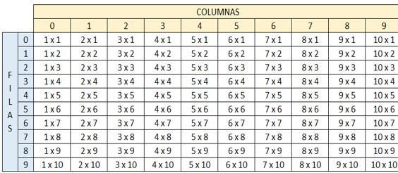

1. Crear un vector de tipo Entero con 5 posiciones, llenarlo con información solicitada al usuario.
Después de recoger toda la información, se requiere imprimir el índice de cada posición en el arreglo
con su valor de la siguiente manera:
o [0] = 55
o [1] = 99
o [2] = 11
o [3] = 56
o [4] = 69
Proceso miPrimerVector
Definir indice Como Entero;
Definir vector Como Entero;
Definir numero1,numero2,numero3,numero4,numero5 Como Entero;
Dimension vector[5];
Para indice <- 0 Hasta 4 Con Paso 1 Hacer
Escribir "Ingrese un numero para la posicion ",indice,"";
Leer vector[indice];
FinPara
Para indice<-0 Hasta 4 Con Paso 1 Hacer
Escribir "[",indice,"]"," = ",vector[indice];
FinPara
FinProceso
2. Crear un arreglo de números enteros de 20 posiciones, el cual, debe ser llenado con números
aleatorios entre 1 y 100; después de haber llenado dicho arreglo, se debe volver a recorrer utilizando
un ciclo diferente al que se usó para llenarse e imprimir los números pares e impares. Ejemplo
o Números pares: 2, 4, 6, 8, 10
o Números impares: 1, 3, 5, 7, 9
Proceso arreglo
Definir x,numeroX,contador Como Entero;
Definir vector Como Entero;
Dimension vector[1];
Para numeroX <- 1 Hasta 1000 Con Paso 1 Hacer
x<-1;
contador <- 0;
Mientras x<= numeroX Hacer
Si numeroX mod x == 0 Entonces
contador <- contador+1;
FinSi
x<-x+1;
FinMientras
si contador == 2 Entonces
vector[0] <- numeroX;
Escribir "El numero : ",vector[0]," es primo";
FinSi
FinPara
FinProceso
3. Imprimir los números primos del 1 al 1000, el resultado debe ser buscado de forma matemática.
Proceso primos
Definir x,numeroX,contador Como Entero;
Definir vector Como Entero;
Dimension vector[1];
Para numeroX <- 1 Hasta 1000 Con Paso 1 Hacer
x<-1;
contador <- 0;
Mientras x<= numeroX Hacer
Si numeroX mod x == 0 Entonces
contador <- contador+1;
FinSi
x<-x+1;
FinMientras
si contador == 2 Entonces
vector[0] <- numeroX;
Escribir "El numero : ",vector[0]," es primo";
FinSi
FinPara
FinProceso
4. Dada la siguiente matriz bidimensional, el cual debe de quemar en el código
o 01 02 03 04 05
o 06 07 08 09 10
o 11 12 13 14 15
o 16 17 18 19 20
Utilizando el conocimiento adquirido, a excepción de hacerlo de forma manual, imprima la siguiente matriz bidimensional.
o 01 02 03 04 05
o 10 09 08 07 06
o 11 12 13 14 15
o 20 19 18 17 16
Proceso matriz
Definir x,numeroX,contador,controlador Como Entero;
Definir i,j Como Entero;
Definir matriz1 Como Entero;
Dimension matriz1[4,5];
matriz1[0,0]<-01;
matriz1[0,1]<-02;
matriz1[0,2]<-03;
matriz1[0,3]<-04;
matriz1[0,4]<-05;
matriz1[1,0]<-06;
matriz1[1,1]<-07;
matriz1[1,2]<-08;
matriz1[1,3]<-09;
matriz1[1,4]<-10;
matriz1[2,0]<-11;
matriz1[2,1]<-12;
matriz1[2,2]<-13;
matriz1[2,3]<-14;
matriz1[2,4]<-15;
matriz1[3,0]<-16;
matriz1[3,1]<-17;
matriz1[3,2]<-18;
matriz1[3,3]<-19;
matriz1[3,4]<-20;
Escribir "Matriz Antes ";
Para i<-0 Hasta 3 Con Paso 1 Hacer
Para j<-0 Hasta 4 Con Paso 1 Hacer
Escribir " ",matriz1[i,j]Sin Saltar;
FinPara
Escribir "";
j<-0;
FinPara
Escribir "Matriz Después";
//Condicional que diga que si es 1 empezar de adelante atras y viceversa
controlador<-0;
Para i<-0 Hasta 3 Con Paso 1 Hacer
Si controlador = 0 o controlador=2 Entonces
Para j<-0 Hasta 4 Con Paso 1 Hacer
Escribir " ",matriz1[i,j]Sin Saltar;
FinPara
j<-4;
SiNo
Si controlador = 1 o controlador = 3 Entonces
Para j<-4 Hasta 0 Con Paso -1 Hacer
Escribir " ",matriz1[i,j]Sin Saltar;
FinPara
j<-0;
FinSi
FinSi
Escribir "";
controlador<-controlador+1;
FinPara
Escribir "";
FinProceso
5. Se debe de imprimir el siguiente cuadro

El usuario deberá insertar la fila y columna de la cual desea ver el resultado, el resultado de cada
celda debe estar previamente calculado en una matriz bidimensional la cual cada resultado obedecerá a la
fila y columna insertada por el usuario.
Proceso multiplicar
Definir matriz1 Como Entero;
Definir k,l,i,j Como Entero;
Definir capturaUno,capturaDos Como Entero;
Dimension matriz1[10,10];
k<-1;
l<-1;
Para i<-0 Hasta 9 Con Paso 1 Hacer
Para j<-0 Hasta 9 Con Paso 1 Hacer
matriz1[i,j] <- k*l;
l<-l+1;
FinPara
l<-1;
k<-k+1;
FinPara
k<-1;
l<-1;
Escribir " | 0 |"," | 1 |"," | 2 |"," | 3 |"," | 4 |"," | 5 |"," | 6 |"," | 7 |"," | 8 |"," | 9 |";
Para i<-0 Hasta 9 Con Paso 1 Hacer
Para j<-0 Hasta 9 Con Paso 1 Hacer
Escribir " |",l,"*",k," = ",matriz1[i,j]," "," |"Sin Saltar;
l<-l+1;
FinPara
Escribir "";
k<-k+1;
l<-1;
FinPara
Escribir "";
Escribir "Inserte la fila (iniciando desde 0) : ";
Leer capturaUno;
Escribir "Inserte la columna (iniciando desde 0): ";
Leer capturaDos;
Escribir "",matriz1[capturaUno,capturaDos];
FinProceso
Video en youtube Taller #4 Arreglos
Acerca de mí
Información sobre mí y mis habilidades en PSeInt y Java.